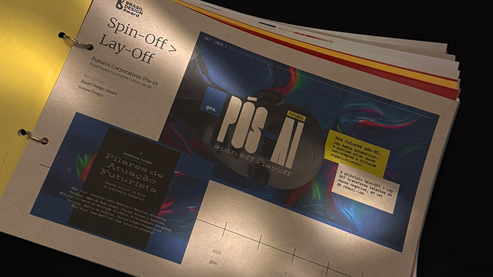

IA, automação, entidades sintéticas, novos materiais, clima, organizações: cada tema costuma vir num relatório separado. Futuros Pós-IA os lê juntos, como uma só transformação que reorganiza mercados e comportamentos. Mais do que uma lista de tendências, é uma visão estratégica que ajuda lideranças a reconhecer as decisões e os posicionamentos que essa era torna possíveis. A plataforma pública também é a origem de uma das linhas de pesquisa que Maia segue hoje.